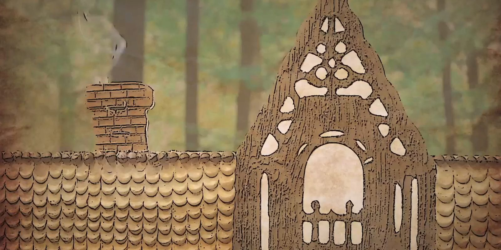

Case 21 · Direção de arte · TV
Que Seja Doce é uma competição de confeitaria do GNT, produzida pela Moonshot Pictures. A abertura conta a história em silhuetas de papel recortado: a casa de doces, os confeiteiros e os jurados. No cenário, os recortes viram painéis vazados, e as provas ganham cartas e biscoitos com letras.

01 · Abertura
A abertura conta a história em silhuetas: a casa de doces na floresta, os confeiteiros e os jurados, com papel envelhecido no fundo.
02 · Silhuetas
Confeiteiros e jurados são silhuetas pretas com um único detalhe colorido: o chapéu de chef, o cabelo. A casa de doces é a moldura onde todos entram.
03 · Cenário e provas
Os painéis vazados do cenário repetem o desenho de galhos e arcos. Nas provas, cartas de mais e menos 10 minutos e biscoitos com as letras A, B e C.